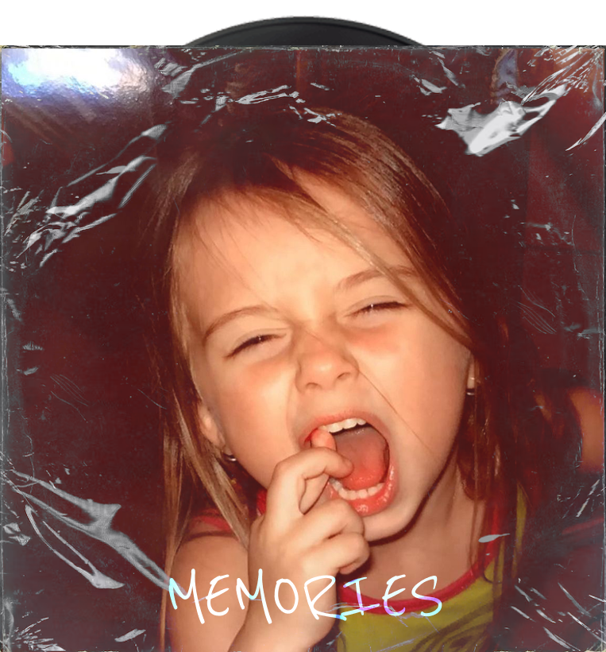
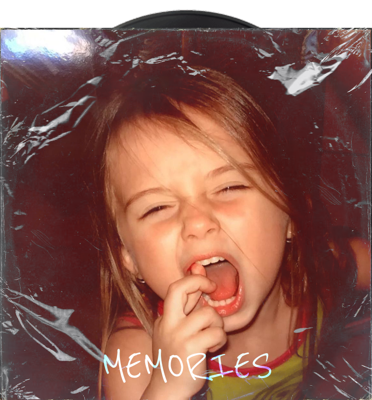

.Ana Paiva
Websites, sistemas web, automações, UI/UX e criação de logotipos — tecnologia criativa.
Carregando...
Websites, sistemas web, automações, UI/UX e criação de logotipos — tecnologia criativa.
 

Sou desenvolvedora de software com formação técnica em Informática pelo Instituto Federal do Sul de Minas Gerais e experiência em projetos que unem tecnologia, criatividade e impacto social. Atuo no Efí Bank com integrações de APIs e automação financeira, e já contribui com curadoria de dados para IA no projeto BIA (Bradesco). Também acumulo vivências em blockchain, eletrônica embarcada e projetos educacionais envolvendo arte e tecnologia. Hoje curso Sistemas de Informação na Unicamp e sigo em busca de criar soluções eficientes, éticas e realmente úteis para as pessoas.